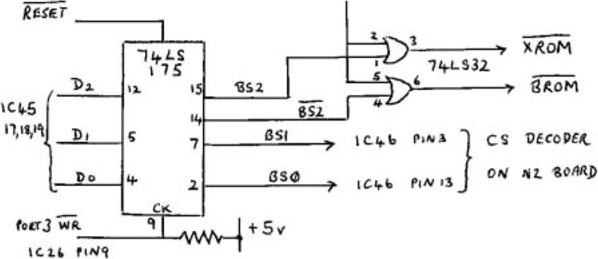

Micropower |
Volume 2 · Number 2 · April 1982 |
| Page 2 of 37 |
|---|
At present, 4K byte EPROMs offer the best value for money in ROM program storage. For example, a number of retailers sell 2732s for around £4.00 to £4.50. This article describes the modifications needed to fit 2732 EPROMs to the Nascom 2 main board, with bank selection to select one-of-four 8K byte EPROM banks, or the Nascom Basic ROM.
The flexibility built into the Nascom 2 board means that 4K EPROMs can be fitted by rewiring the link blocks. The 2732 requires two extra address lines, wired from the ‘special’ link block, LKB9. Bank selection is done by a small board which takes control of the chip select decoder, IC46. The bank selection board plugs into the socket occupied by the memory selection links LKS, and needs 9 soldered connections to the main board. Bank 0 is always selected on reset, and the active bank is changed by OUT 3, n, where n is 0 – 4 as required. Port 3 WR is also spare on the Nascom 2, and could be used to provide a safety interlock against accidental bank switching.
The bank control board is shown in figure 1. The 74LS175 latch is a three bit output port, strobed by the inverted PORT 3 WR signal from the I/O decode PROM IC26. Latched data bits BS0 and BS1 are connected to pins 13 and 3 of the chip select decoder IC46, to select one-of-four EPROM banks. These two IC pins
| Page 2 of 37 |
|---|